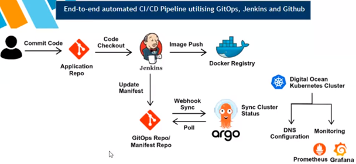
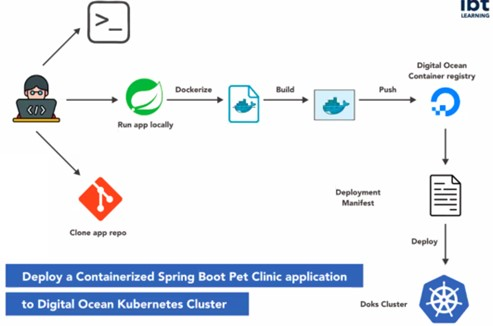
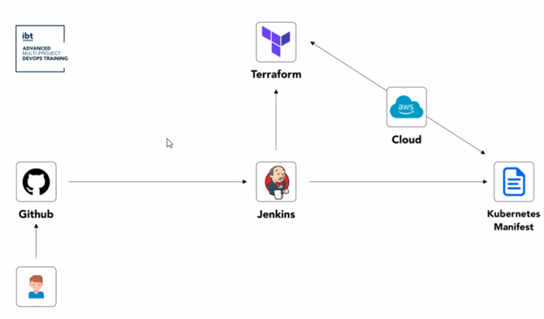
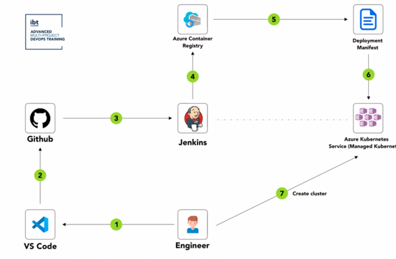

The diagram illustrates an end-to-end automated CI/CD pipeline that integrates GitOps, Jenkins, and GitHub for efficient software delivery. The process starts with code being committed to an application repository, then Jenkins handles code checkout and image pushing to Docker Registry. Finally, updates are managed through GitOps using a Manifest Repository, with Argo CD for deployment synchronization in a Digital Ocean Kubernetes Cluster, and monitoring is performed via Prometheus and Grafana.


This AWS CodePipeline project automates the deployment of cloud resources using Terraform, an infrastructure as code tool. The pipeline is triggered by a source change, like a commit to a specified branch of a repository.

This project automates the deployment of a containerized Spring Boot application designed as a Pet Clinic to a Kubernetes cluster hosted on Digital Ocean.

Code is committed in GitHub and triggering Jenkins to automate tests and deployment.Terraform prepares the AWS Cloud infrastructure, and Kubernetes manifests handle the application rollout.

In this workflow, Helm chart is created.The chart is managed and stored in Github. Lastly, charts are published to the Artifact HUB,making them available for public or private use. This facilitates the deployment and management of applications in Kubernetes environments.

Use AWS SDK for Python to Automate, Manage an AWS Service/Task.

Code is developed and committed to Github. Jenkins automates the build and pushes the container image to Azure Container Registry. Finally, Jenkins uses a deployment manifest to deploy the app to an Azure Kubernetes Service cluster. This CI/CD pipeline integrates source control, image registry, and Kubernetes orchestration.